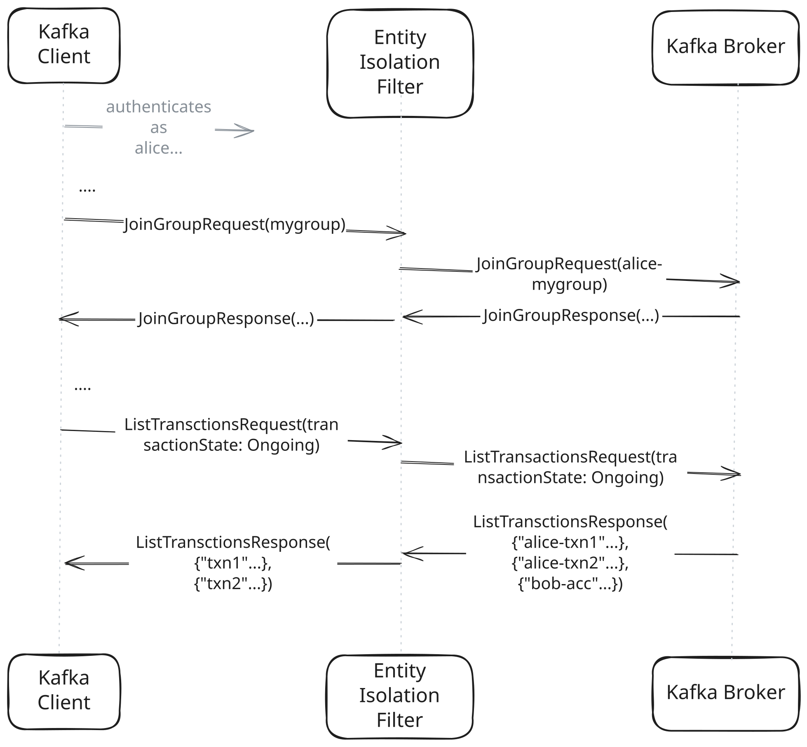

This guide covers using the Kroxylicious Entity Isolation Filter. This filter gives each authenticated user a private space within a Kafka cluster, isolated from other users sharing the same cluster. Isolation can be applied selectively to some entity types and not others. For example, it’s possible to have isolation for consumer groups, but not for topics.
The Kroxylicious Entity Isolation filter gives each authenticated client a private, isolated view of certain Kafka entity types within a shared cluster. When entity isolation is enabled for a resource type, each client connecting through the proxy operates as if it owns that namespace entirely — it cannot see, interfere with, or accidentally collide with the same-named resources belonging to other clients.
The filter achieves this by intercepting Kafka RPCs on the request and response paths:
On the request path, resource names are transparently mapped from the client’s isolated view to a cluster-wide name that includes a client-specific prefix or transformation.
On the response path, the cluster-wide name is mapped back to the client’s view. Resources that do not belong to the current client’s namespace are filtered out of list and describe responses.

To use the Entity Isolation filter, the proxy must determine the authenticated subject. The authenticated subject is the verified identity of the client, derived from successful authentication.
If your applications use TLS client authentication, configure the transport subject builder within the virtual cluster to build a subject based on the client certificate.
If your applications use SASL authentication, configure the SASL inspection filter to build the authenticated subject from the successful SASL exchange between the client and the broker.
The current implementation supports isolation for the following Kafka entity types:
GROUP_ID
Consumer group identifiers used in all consumer group RPCs (e.g. JoinGroup, OffsetFetch, DeleteGroups).
TRANSACTIONAL_ID
Transactional producer identifiers used in transactional RPCs (e.g. InitProducerId, AddPartitionsToTxn, EndTxn).
| Topic name isolation is not yet supported. For more information, see the related issue. |
The filter delegates all resource name transformations to a pluggable EntityNameMapper. The mapper is given the authenticated subject of the current connection and the entity type being mapped, and is responsible for:
Translating a client-visible name to a cluster-visible name (mapping).
Translating a cluster-visible name back to a client-visible name (unmapping).
Deciding whether a cluster-visible name falls within the current client’s namespace.
The built-in mapper, PrincipalEntityNameMapper, prefixes resource names with the name of a principal from the authenticated subject. By default, the mapper extracts the io.kroxylicious.proxy.authentication.User principal type from the subject. This can be overridden to any other class that implements the io.kroxylicious.proxy.authentication.Principal interface that has the io.kroxylicious.proxy.authentication.Unique class-level annotation. The mapper requires that the authenticated subject provides exactly one principal of the expected type, otherwise the connection will be closed with an error.
When forming the cluster-visible name, the mapper separates the principal name from the resource name using a separator. The separator defaults to a hyphen (-), but this can also be overridden in configuration. If a client authenticates with a principal that contains the separator, the filter will disconnect the client with an error.
Both the principal name and the separator must contain only ASCII alphanumerics, '.', '_' and '-'. This restriction comes from Kafka itself.
To illustrate the default behavior of the mapper, given a principal name alice and a consumer group called my-consumer-group, the group is stored on the broker as alice-my-consumer-group.
|
The filter can only guarantee non-collision for clients that connect through the proxy. If clients connect straight to the broker, there is no mechanism to prevent them from creating resources that collide with the cluster-visible names chosen by this filter. |
When a Kafka request arrives at the proxy:
The filter identifies fields in the request that reference entity types for which isolation is enabled.
Each matching field value is passed to the EntityNameMapper which returns the cluster-visible name.
The mutated request is forwarded to the broker.
When the broker’s response arrives at the proxy:
The filter identifies fields in the response that reference entity types for which isolation is enabled.
For each such field, the EntityNameMapper checks whether the value belongs to the current client’s namespace.
If it does, the value is unmapped to the client-visible name and passed through.
If it does not, the filter removes the containing record from the response.
The mutated response is returned to the client.
This procedure describes how to set up the Entity Isolation filter by configuring it in Kroxylicious.
An instance of Kroxylicious. For information on deploying Kroxylicious, see the Kroxylicious Proxy guide or Kroxylicious Operator for Kubernetes guide.
Configure an EntityIsolation type filter.
In a standalone proxy deployment. See Example proxy configuration file
In a Kubernetes deployment using a KafkaProtocolFilter resource. See Example KafkaProtocolFilter resource
If your instance of the Kroxylicious Proxy runs directly on an operating system, provide the Entity Isolation filter configuration in the filterDefinitions list of your proxy configuration.
Here’s a complete example of a filterDefinitions entry configured for entity isolation:
filterDefinitions configuration
filterDefinitions:
- name: my-entity-isolation
type: EntityIsolation
config:
entityTypes:
- GROUP_ID
- TRANSACTIONAL_ID
mapper: PrincipalEntityNameMapperService
mapperConfig:
separator: "-"
principalType: <principal implementation>entityTypes is an array of entity types to isolate. Allowed values are GROUP_ID and TRANSACTIONAL_ID.
mapper is the name of the naming mapping service implementation. Currently, this must be PrincipalEntityNameMapperService.
separator is the string that the mapper uses to separate the principal from the resource name.
principalType identifies the principal type within the subject that will be used to form the cluster-visible entity names. Use the fully-qualified class name of the principal. Defaults to io.kroxylicious.proxy.authentication.User if not specified.
Refer to the Kroxylicious Proxy guide for more information about configuring the proxy.
KafkaProtocolFilter resourceIf your instance of Kroxylicious runs on Kubernetes, you must use a KafkaProtocolFilter resource to contain the filter configuration.
Here’s a complete example of a KafkaProtocolFilter resource configured for entity isolation:
kind: KafkaProtocolFilter
metadata:
name: my-entity-isolation
spec:
type: EntityIsolation
configTemplate:
entityTypes:
- GROUP_ID
- TRANSACTIONAL_ID
mapper: PrincipalEntityNameMapperService
mapperConfig:
separator: "-"
principalType: <principal implementation>entityTypes is an array of entity types to isolate. Allowed values are GROUP_ID and TRANSACTIONAL_ID.
mapper is the name of the naming mapping service implementation. Currently, this must be PrincipalEntityNameMapperService.
separator is the string that the mapper uses to separate the principal from the resource name.
principalType identifies the principal type within the subject that will be used to form the cluster-visible entity names. Use the fully-qualified class name of the principal. Defaults to io.kroxylicious.proxy.authentication.User if not specified.